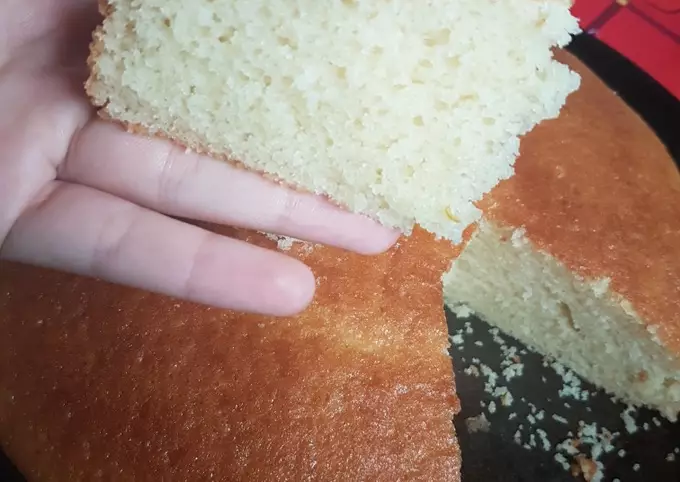

Bizcochuelo casero super humedo, esponjoso y facil

- Tiempo de preparacion 30 - 40 minutos
- Porciones 8
Ingredientes
- 2 tazas Harina leudante
- 1 taza Azucar
- 1 taza Leche
- 150 cc Aceite
- 2 Huevos
- Esencia de Vainilla
- Ralladura de Naranja o Limon
Paso a paso
- Mezclar los huevos, la esencia de Vainilla y la cáscara de naranja
- Colocar el aceite, azúcar y la leche y mezclar
- Colocar las 2 tazas de harina y mezclar hasta que no queden grumos
- Enmantecar y enharinar el molde y colocar la preparación
- Llevar al horno 160° por 45 minutos o hasta pinchar y que salga seco! IMPORTANTE no abrir el horno
- Sacar del horno, dejar enfriar, desmoldar y disfrutar
Queremos conocer tu opinion
Realizar Consulta